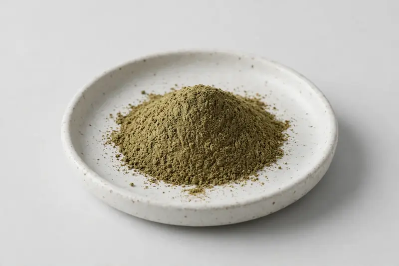

Ilex paraguariensis — a naturally caffeinated leaf extract positioned around energy and focus formulations.

Overview
Yerba mate extract is drawn from the leaf of Ilex paraguariensis and carries polyphenols, chlorogenic acids and naturally occurring caffeine. It has become a familiar name in natural-energy positioning, often paired with other botanical stimulants. As a Xi'an-based trading company, we source through vetted partner producers and confirm marker and caffeine targets honestly before quoting.
Specifications below reflect commonly requested options in the market — not a stock list. Share your target spec and we'll confirm exactly what we can supply, honestly.
| Specification | Details |
|---|---|
| Botanical identity | Ilex paraguariensis, leaf |
| Marker compound | Polyphenols — commonly requested: 20% (UV); natural caffeine — commonly requested: 2-10% (HPLC); chlorogenic acids — commonly requested: 2-8% (HPLC) |
| Appearance | Green-brown to brown fine powder |
| Mesh size | Typically 80–100 mesh (confirm per inquiry) |
| Testing | COA/TDS arranged on request; scope agreed per your spec |
Applications
Documentation
We don't claim in-house labs or certifications we don't hold. COA and TDS documents can be arranged on request, and testing scope is agreed against your specification before supply.
FAQ
Related products
Berberis aristata
Key marker: Berberine
View specs →Purified mineral pitch
Key marker: Fulvic Acid
View specs →Eurycoma longifolia
Key marker: Eurycomanone
View specs →Ziziphus jujuba var. spinosa
Key marker: Jujubosides
View specs →Angelica sinensis
Key marker: Ferulic acid
View specs →Send your target spec and volumes — we'll respond with a tailored quotation.
Request a Quote